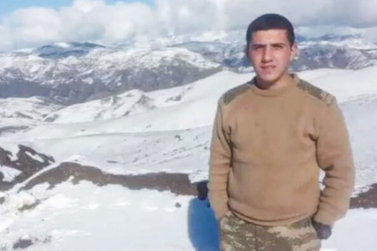

Armenia has adopted a decision to extradite Ruslan Panakhov to Azerbaijan. Armenian media reported on this with reference to the National Security Service of the country. It was stated that the decision was made "in accordance with the agreement reached between Armenia and Azerbaijan at the highest level". It should be recalled that on the morning of February 28, the soldier of the Azerbaijan Army, Ruslan Eldeniz oglu Panahov, while moving between the service positions in the territory of Lachin region, lost his direction in unfavorable weather conditions and went to the side of Armenia. 21:52 On February 28, 2024, while moving between service positions in the territory of Lachin region, the criminal prosecution of Ruslan Eldeniz Oglu Panahov, a military serviceman of the Azerbaijan Armed Forces, who lost his direction in adverse weather conditions and crossed over to Armenia, was stopped by the Prosecutor's Office of Armenia. Armenian media reported on this with reference to the Investigative Committee of the country. According to information, the Investigative Committee of Armenia submitted a petition to the prosecutor's office to terminate the criminal prosecution against Panahov, and it was granted.